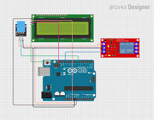

Combine sensors and displays! In this project, we'll take the temperature reading from an LM35 sensor and display it in real-time on our I2C LCD screen.
1. Concept and Description
In this project, you will learn how to display variable data on an LCD. We will read an analog value from an LM35 temperature sensor, convert it to degrees Celsius, and update the display. You'll also learn how to update the screen efficiently to avoid flickering.
Displaying variable data on an LCD
Updating the display without flickering
Formatting text and numbers
Combining analog inputs with I2C outputs
2. Components Needed
(1) Arduino Uno (or compatible board)
(1) 16x2 LCD with I2C Backpack (Address usually 0x27)
(1) LM35 Temperature Sensor
(7) Jumper Wires (M-M and F-M)
3. Physical Montage (Wiring Instructions)
Follow these steps to connect your LCD and sensor:
LCD Power: Connect LCD VCC to 5V and GND to GND.
LCD Data: Connect LCD SDA to A4 and SCL to A5.
Sensor Power: Connect LM35 VCC (left leg, flat side facing you) to 5V and GND (right leg) to GND.
Sensor Signal: Connect the middle leg of the LM35 to Analog Pin A0.

4. The Code (Arduino Sketch)
Copy and paste the code below into your Arduino IDE. Ensure you have the "LiquidCrystal_I2C" library installed.
/*
* Project #31: LCD Temperature Display
* The Arduino Student Lab
*
* Reads temperature from LM35 on pin A0
* Displays value in Celsius on I2C LCD
*/
#include <Wire.h>
#include <LiquidCrystal_I2C.h>
// Initialize LCD (Address 0x27, 16 columns, 2 rows)
LiquidCrystal_I2C lcd(0x27, 16, 2);
const int sensorPin = A0; // LM35 output pin
void setup() {
// Initialize the LCD
lcd.init();
lcd.backlight();
// Print static text once to avoid flickering
lcd.setCursor(0, 0);
lcd.print("Temp Monitor");
lcd.setCursor(0, 1);
lcd.print("Temp: C");
}
void loop() {
// Read the raw analog value
int reading = analogRead(sensorPin);
// Convert to voltage (0-5V)
float voltage = reading * (5.0 / 1023.0);
// Convert voltage to Celsius (10mV per degree)
float tempC = voltage * 100.0;
// Update only the number part
lcd.setCursor(6, 1);
lcd.print(tempC, 1); // Print with 1 decimal place
// Small delay for stability
delay(1000);
}
5. Troubleshooting & Explanation
Code Explanation: We use lcd.print(tempC, 1) to show one decimal place. By printing the static text "Temp:" only once in setup(), we prevent the screen from flickering.
Troubleshooting: If the reading is unstable, check your connections. If the LCD is blank, adjust the potentiometer on the back of the I2C module.